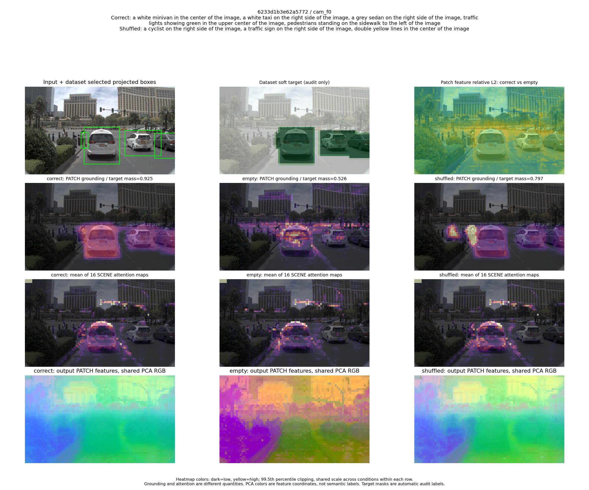
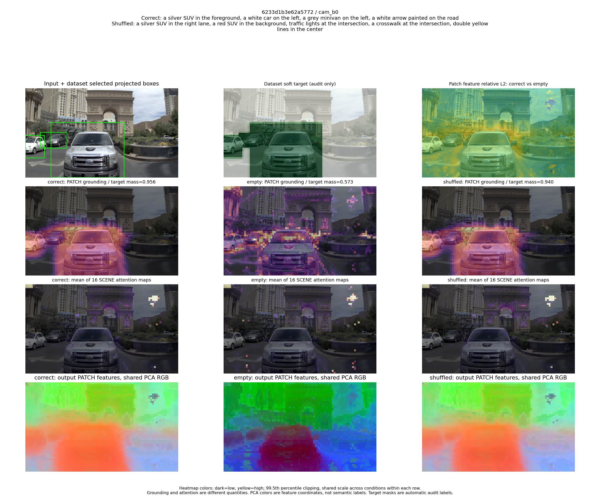
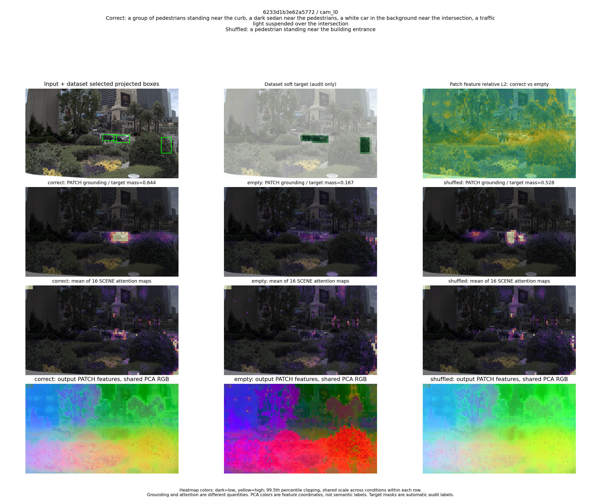
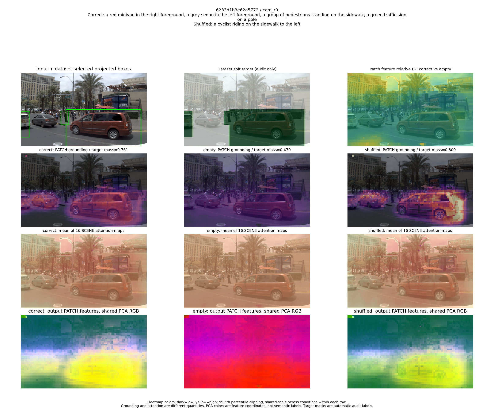
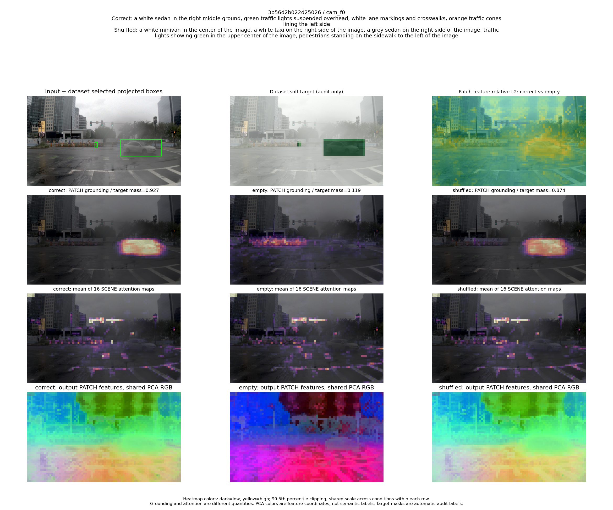
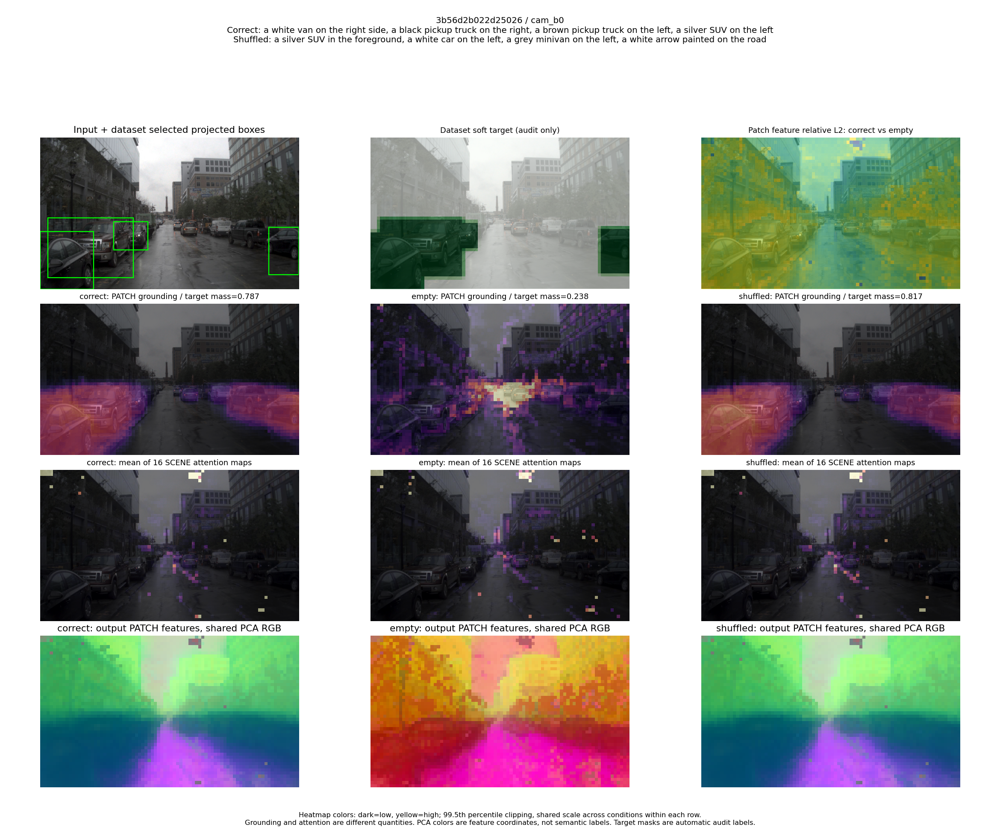
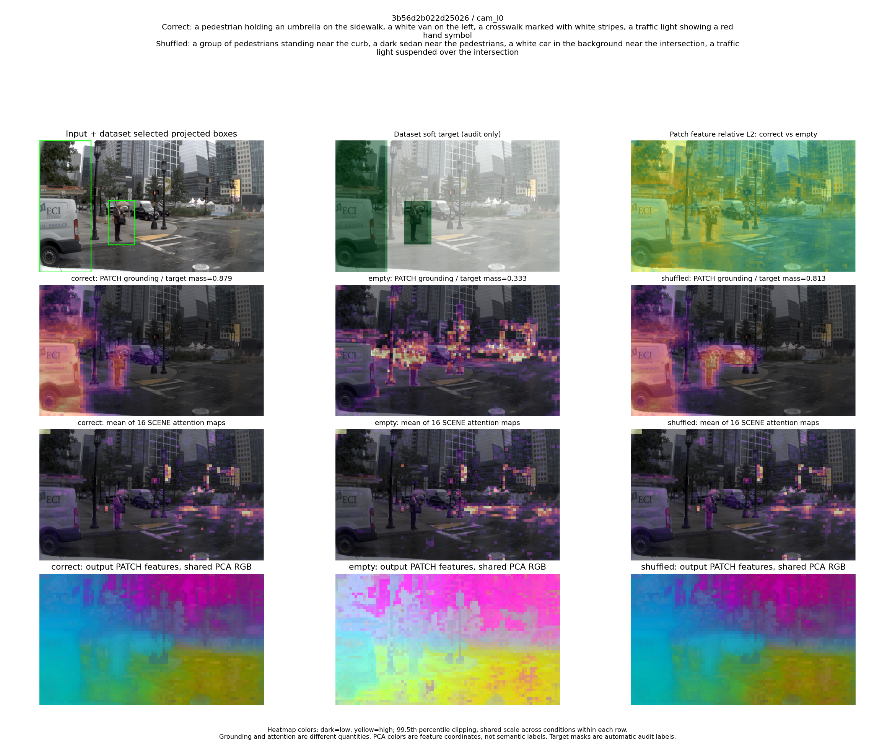
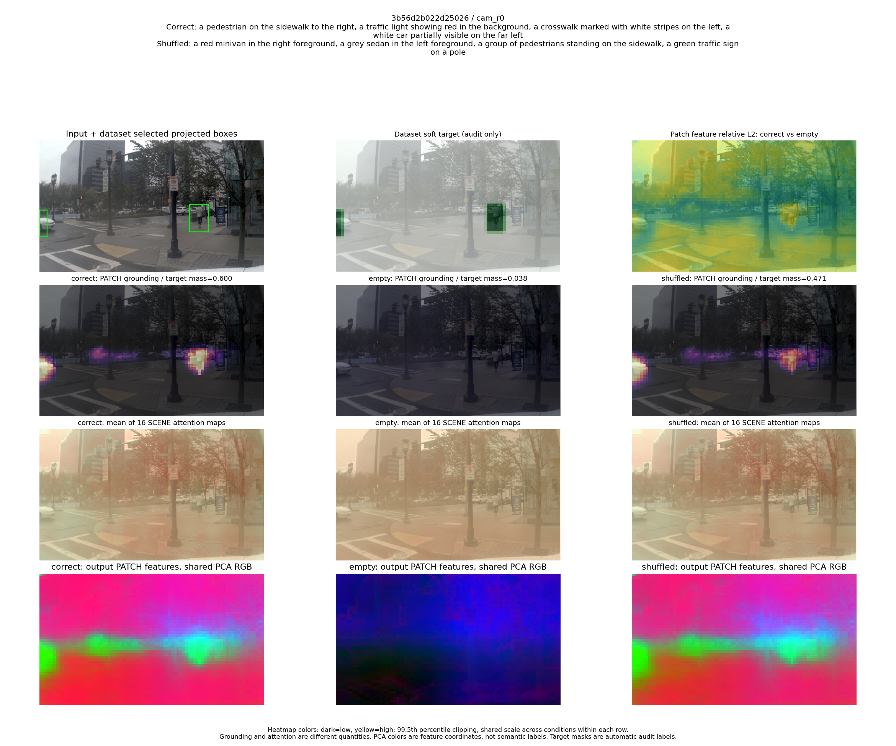

3 test scenes, 4 cameras each. All selected views are shown; selection preceded inference. Correct / empty / shuffled language use identical images and weights. Click an image for full resolution.
6233d1b3e62a5772
2021.05.25.15.59.03_veh-30_01478_01643
cam_f0
a white minivan in the center of the image, a white taxi on the right side of the image, a grey sedan on the right side of the image, traffic lights showing green in the upper center of the image, pedestrians standing on the sidewalk to the left of the image
Patch probability mass inside audit target — correct: 0.925 / empty: 0.526 / shuffled: 0.797
16 tokens: correct · 16 tokens: empty · 16 tokens: shuffled · Raw features

cam_b0
a silver SUV in the foreground, a white car on the left, a grey minivan on the left, a white arrow painted on the road
Patch probability mass inside audit target — correct: 0.956 / empty: 0.573 / shuffled: 0.940
16 tokens: correct · 16 tokens: empty · 16 tokens: shuffled · Raw features

cam_l0
a group of pedestrians standing near the curb, a dark sedan near the pedestrians, a white car in the background near the intersection, a traffic light suspended over the intersection
Patch probability mass inside audit target — correct: 0.644 / empty: 0.167 / shuffled: 0.528
16 tokens: correct · 16 tokens: empty · 16 tokens: shuffled · Raw features

cam_r0
a red minivan in the right foreground, a grey sedan in the left foreground, a group of pedestrians standing on the sidewalk, a green traffic sign on a pole
Patch probability mass inside audit target — correct: 0.761 / empty: 0.470 / shuffled: 0.809
16 tokens: correct · 16 tokens: empty · 16 tokens: shuffled · Raw features

3b56d2b022d25026
2021.09.09.14.18.22_veh-48_01298_01492
cam_f0
a white sedan in the right middle ground, green traffic lights suspended overhead, white lane markings and crosswalks, orange traffic cones lining the left side
Patch probability mass inside audit target — correct: 0.927 / empty: 0.119 / shuffled: 0.874
16 tokens: correct · 16 tokens: empty · 16 tokens: shuffled · Raw features

cam_b0
a white van on the right side, a black pickup truck on the right, a brown pickup truck on the left, a silver SUV on the left
Patch probability mass inside audit target — correct: 0.787 / empty: 0.238 / shuffled: 0.817
16 tokens: correct · 16 tokens: empty · 16 tokens: shuffled · Raw features

cam_l0
a pedestrian holding an umbrella on the sidewalk, a white van on the left, a crosswalk marked with white stripes, a traffic light showing a red hand symbol
Patch probability mass inside audit target — correct: 0.879 / empty: 0.333 / shuffled: 0.813
16 tokens: correct · 16 tokens: empty · 16 tokens: shuffled · Raw features

cam_r0
a pedestrian on the sidewalk to the right, a traffic light showing red in the background, a crosswalk marked with white stripes on the left, a white car partially visible on the far left
Patch probability mass inside audit target — correct: 0.600 / empty: 0.038 / shuffled: 0.471
16 tokens: correct · 16 tokens: empty · 16 tokens: shuffled · Raw features
